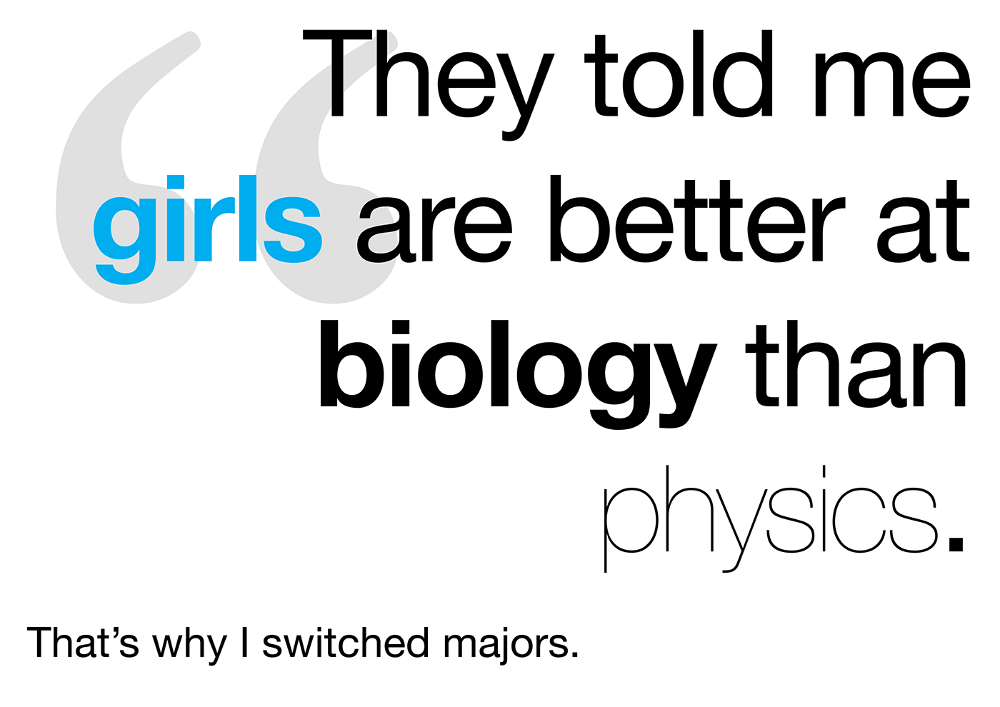
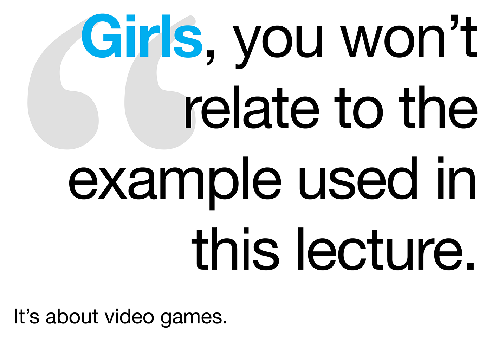
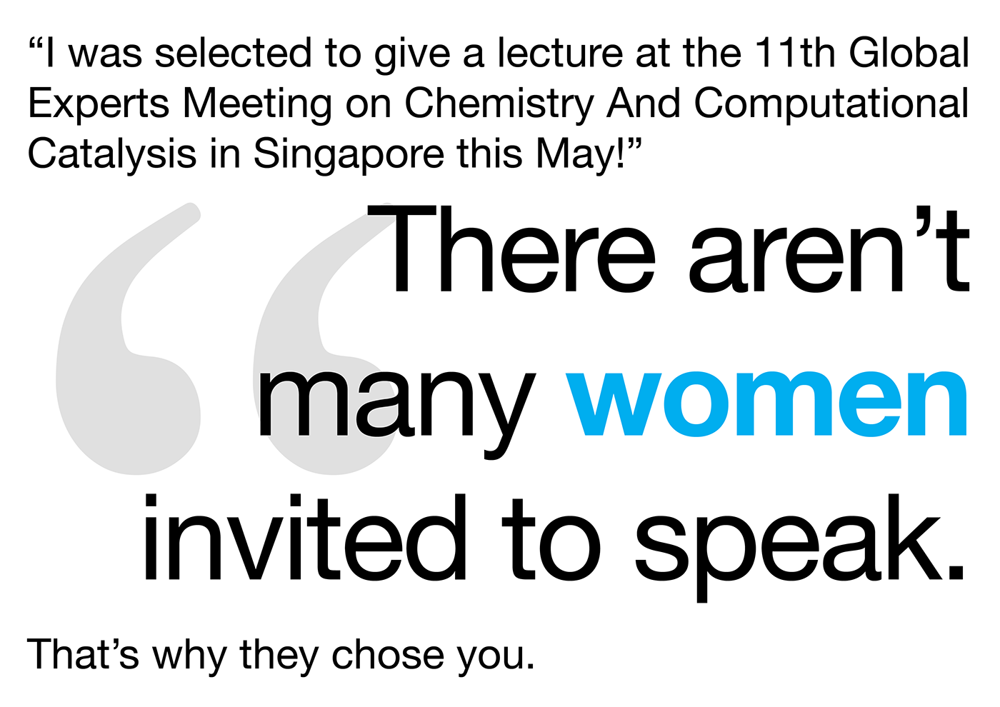

Internal
COMMUNITY
1. Freshman Outreach
Programs to reach out to Freshmen and encourage and guide their academic careers in STEM.
2. Community Dinners
Our monthly community dinners focus on creating a larger community for weSTEM within NYUAD that includes students, professors, and post-docs. They are a place for people to get to know each other, have meaningful and important conversations while having some good food and a good time! These dinners are sometimes regular dinners where students can cook together and enjoy the night, but could also be focused on other things like creating a study group and course-advising that benefit students within the weSTEM community.
3. Podcast
The STEMinist Podcast series works with NYUAD's Howler Radio to produce weekly shows covering different topics involving women in STEM fields, and STEM at NYUAD.
SPEAKER SERIES
The Speaker Series aims to highlight a variety of STEM-related topics through talks open to both the NYUAD community and external attendees. We hope that by bringing prominent speakers to campus, our students and community will be introduced to a wider variety of career opportunities within the STEM field.


Past talks:
September 27th: The Google Memo - Paula Dozsa Former Google intern Paula Dozsa shared her thoughts on “the Google memo” and its larger implications for women in technology. The talk was attended by both students and faculty members and was followed by a mixer that enabled further discussions. November 12th: Female Representation in STEM Fields in the UAE - Leigh Llewellyn Graham Anthropologist Leigh Llewellyn Graham will share her research and insight into female representation in STEM Fields in the UAE.
UNBIASING


